| WHY SUNBLOCK? | | ANTI-AGING TIPS | | ACNE TIPS | | OILY TIPS | | DRY TIPS | | BREAK FROM SKINCARE |
SUNBLOCK | SUNSCREEN
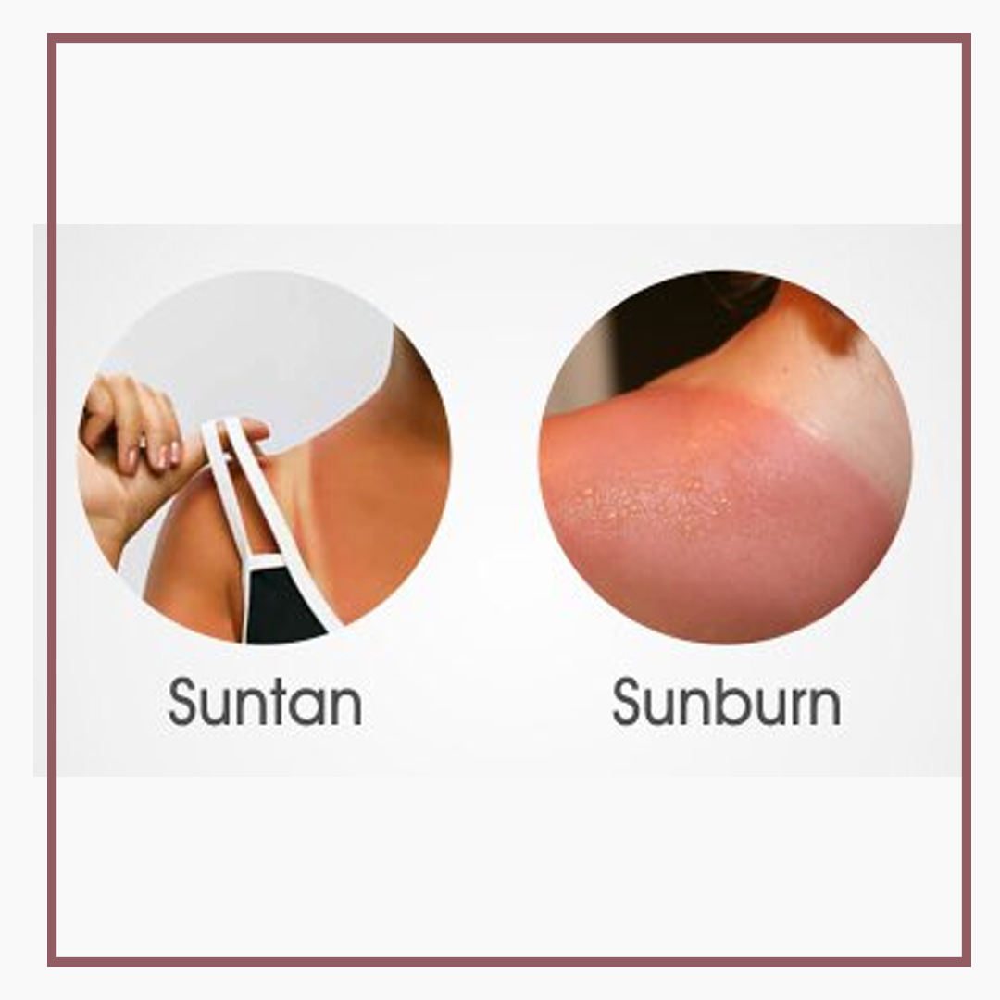
1. Avoid sunburn / sun tan / dark / black / burned
2. Avoid the angled and old looking skin
3. Avoid pigmentation - Most of the main causes of freckles are not wearing sunscreen
4. Avoid skin cancer
What's the difference between sunblock & sunscreen?
Honestly for me, the taste of the two is the same. Some people say that sunblock against UVB, sunscreen againts UVA and Some also say sunscreen for daily use because he is not sticky, sunblock to go beach because he is sticky and there is white cast. There is also a different word he ingredient, either physical or chemical sunscreen.
Ingredient in sunscreen or sunblock.
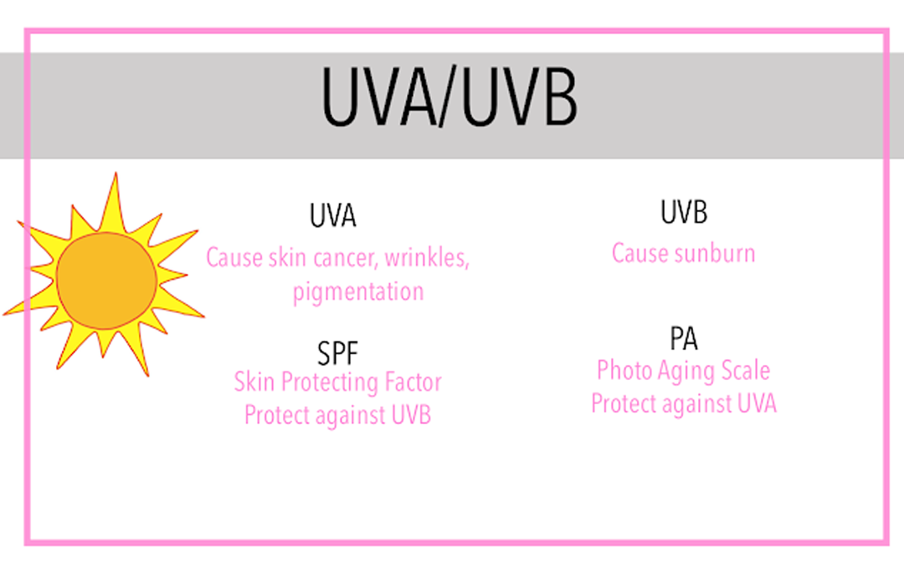
-UVA: Aging - PA +++ so that the skin is not aging (looks old, creased, pigmentation)
-UVB: Burning - Wear at least SPF30-50 so that the skin does not burn
How much do we need to apply sunscreen or sunblock?
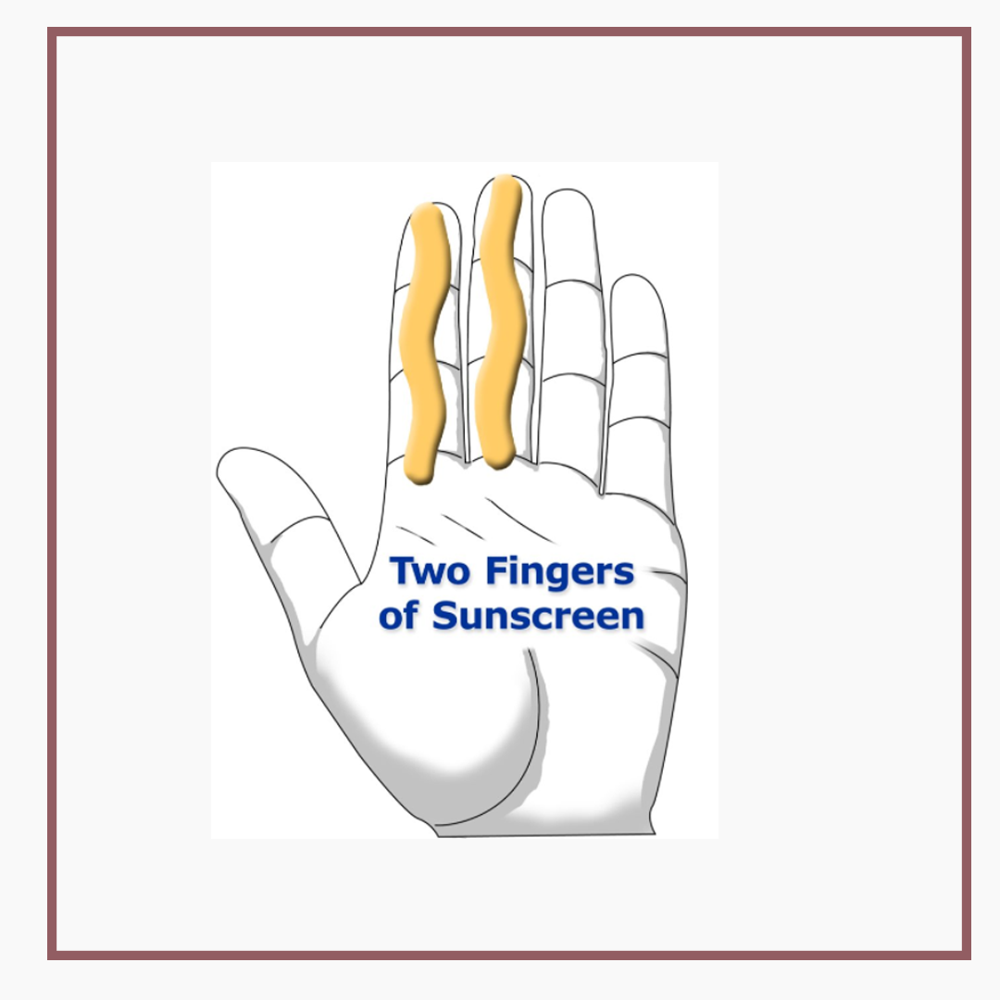
should wear a lot like the picture above for maximum protection.
Reasons Wearing Sunscreen is Important
1. It decreases your risk of developing deadly cancer.
Using sunscreen daily, even when it is cloudy or raining, dramatically decreases your risk of developing skin cancer. This is especially true of the deadliest form, melanoma, which is responsible for 75% of all skin cancer deaths in Iowa.
2. It keeps you looking young.
Did you know the number-one cause of premature aging of the face is ultraviolet exposure? By wearing sunscreen, you are slowing down the development of wrinkles and leathery skin.
3. Sunscreen keeps your skin tone even.
In addition to slowing aging of the skin, sunscreen prevents facial brown spots and skin discolorations.
4. Sunscreen is important for all skin types.
Even if you don’t burn easily, wearing sunscreen is still important. Sunburn is an immediate reaction, but sun damage occurs over a lifetime. Although skin cancer is more prevalent in people with lighter skin, it does not discriminate and can still affect those with darker skin.
5. Sunscreen protects you from more than sunburn.
If you have ever had sunburn, you understand just how unpleasant red, burning skin can be. Heatstroke and heat exhaustion are two other extremely nasty health issues that can arise from extended sun exposure. Sunscreen, in combination with other precautions such as increased consumption of water, can help you avoid these issues, which can lead to nausea, muscle cramps and even brain damage if left untreated.
ANTI-AGING | 5-MINUTES FACE MASSAGE
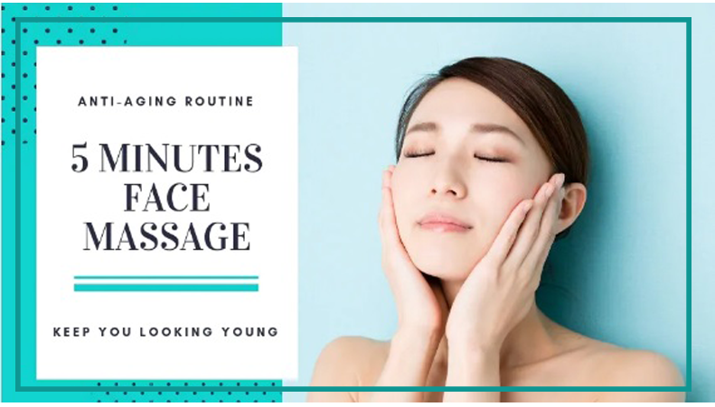
Of course! Everyone want to look young and stay young, do you find yourself spending a bomb on anti-aging products? Unfortunately, you still find your skin is sagging. Some people would go to facial treatment; it definitely helps for short term. However, it costs you a fortune and it is time consuming. Why not just spend 5 minutes to massage your face a day, it keeps age away!
1. Korean V-shape chin massage
A firming face with V-shape chin always makes you look younger. How to prevent your tiring and sagging chin muscle and skin? It can be as simple as using two fingers to press the node which next to your jaw and behind your ear. Then, you can also brush your finger from the chin toward your ears. This massage is good for lymph drainage and circulation; as a result, you will find your skin looks healthier. Repeat the movement for 4-5 times.
2. Slide away your laugh line with small pinch
We all love smiles, we just don’t like our laugh lines that much. Pinch three fingers from the corner of your mouth; slide them along to your temple. Repeat the movement each side for 4-5 times.
3. Slide away your wrinkles on forehead
Let your fingers start with the top of your nose, lightly pinch it and sldie along to the centre of your eyebrow. And, slide outwards to your temple with some tension. Repeat the movement for 4-5 times.
4. Get rid of marionette lines
People may ignore the marionette lines; yet, better to eliminate it so that you would look perfectly young. Place your tip of index finger and middle finger on your upper lip, slide downward to your chin. Repeat the movement for 4-5 times.
5) Don’t forget to smooth your skin
After the facial massage, it is the perfect time to do your deep cleansing and moisturizing for your skin. Also, you may apply any anti-aging essence; your skin would absorb better after massage!
ACNE | 4 ACNE TREATMENT MISTAKES
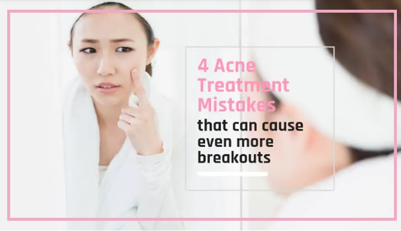
Acne can be extremely frustrating. No matter how many acne-fighting products you have tried or how many times you have washed your face, the acne problem is still here to stay, or getting even worse. Why? Probably you are making the 4 common mistakes listed below. It’s now time to improve your acne-fighting strategy and be sure to avoid making these acne treatment mistakes again so to keep your skin blemish-free.
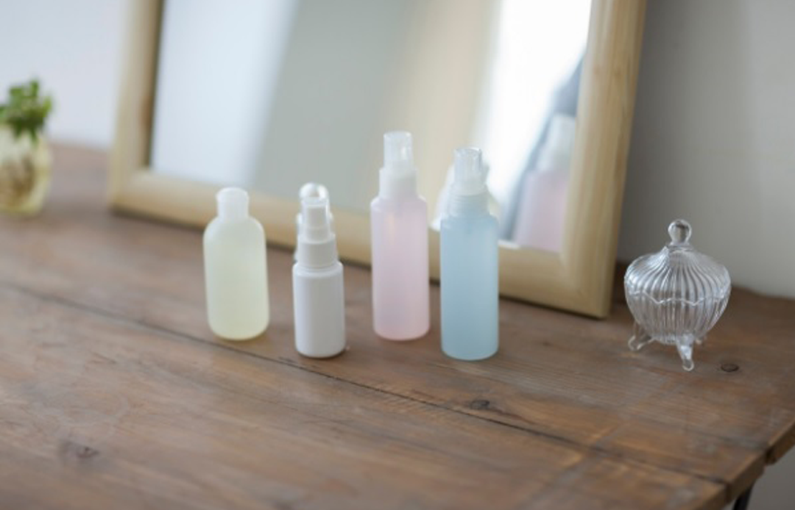
1. Jumping from product to product
Most people do not wait long enough to see the results of the spot treatments. If they don’t get results in the first few days of treatment, they will quickly abandon them and try other products.
The right approach: Getting rid of your pimples overnight is nothing more than wishful thinking. According to skin experts, it is suggested to give a product a month to determine whether the treatment works for you or not.
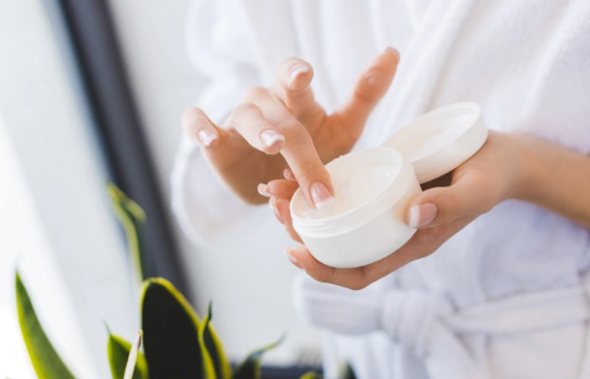
2. Overusing an acne treatment product
Contrary to popular belief, applying more acne-fighting products does not mean that the pimples will go away any sooner. Too much of a good thing will do more harm than good, leading to irritations, dryness, redness and so on.
The right approach: Do refer to the product instruction labels for proper usage guidelines.
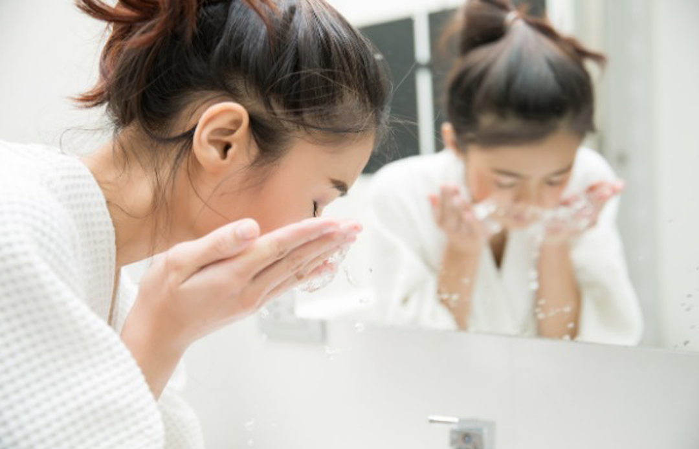
3. Over-cleansing your skin
Cleansing is a vital skincare step for those with acne-prone skin. However, it’s very likely that people tend to over-cleanse, which could be counterproductive. This will cause even more oil to be produced, leading to more breakouts.
The right approach: Maintain your daily skincare routine as usual and wash your face twice a day, only in the morning and evening. At the same time, do remember to keep your cleansers gentle.
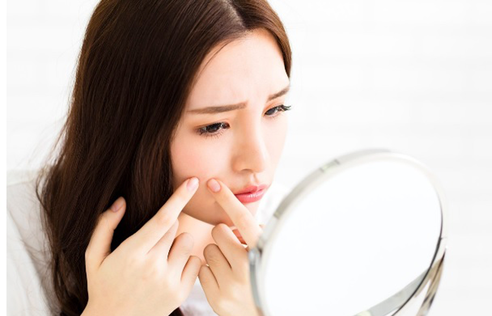
4. Popping pimples
Can’t help popping pimples every time they show up on your face unwelcome? Think twice before you do so since infected materials can get pushed into the skin, raising the risk of inflammation and scarring.
The right approach: Use acne remedies that work for you. If blemishes are not cleared up, go to a dermatologist to avoid causing even more breakouts.
OILY-SKIN | 5 SKIN TREATMENT
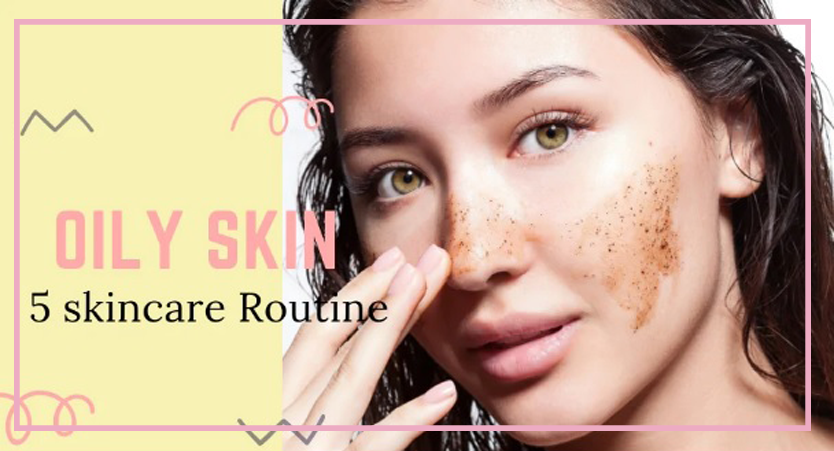
Cleansing your skin frequently is the only solution for oily skin? No, you are wrong! It is important to know that there are 5 important skin care routine to battle oily skin, from preventing acne, firming skin to oil control. As long as you purchase the right skincare and makeup products, you will own beautiful and smooth skin without hustle!
1. Choose the right product for your skin
Latest skincare products maybe very tempting to you; yet, the skincare products are formulated for particular skin type. If you apply skincare products which formulated for dry skin, you will never see improvement for your skin. Take moisturizer as an example, people who has oily skin should choose a lightweight lotion, so that it will achieve a moisturizing effect and your skin will not look very greasy.
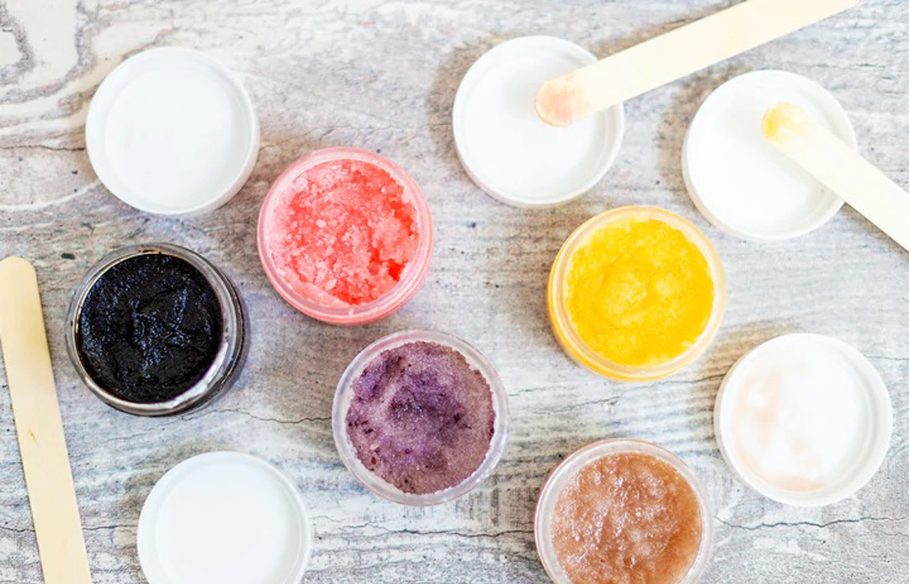
2. Exfoliate once a week (at least)
No matter you have normal skin or oily skin, it is essential to exfoliate old cells so the lively cells can come to outer layer. A face scrub would be a good choice to exfoliate on weekly basis; you should keep close attention to the responds of you r skin and determine what the best is for you.
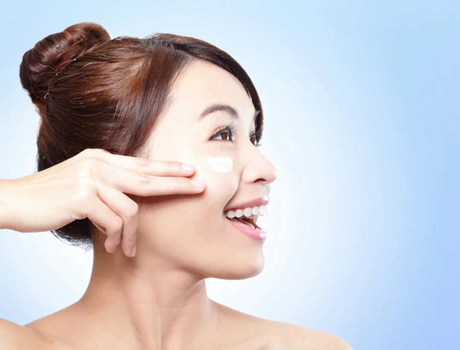
3. Don’t forget moisturizer
Contrary to popular belief, moisturizer plays an important role for oily skin. Thanks to excessive cleansing, your skin will produce more oil in order to create skin’s moisture barrier.
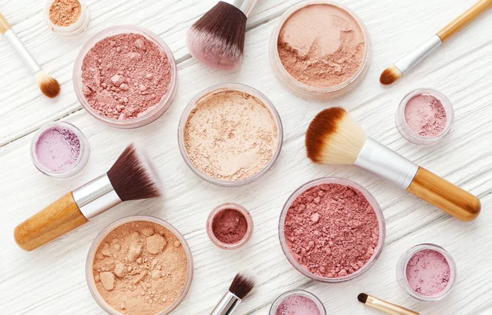
4. Go for makeup with less oil
When it comes to choose makeup products for oily skin, you should choose makeup product with less oil in order to have better balance on oil control. For example, choosing an oil-free foundation will prevent you looking too greasy.
DRY AND ITCHY SKIN | 5 TIPS TO GET RID OF
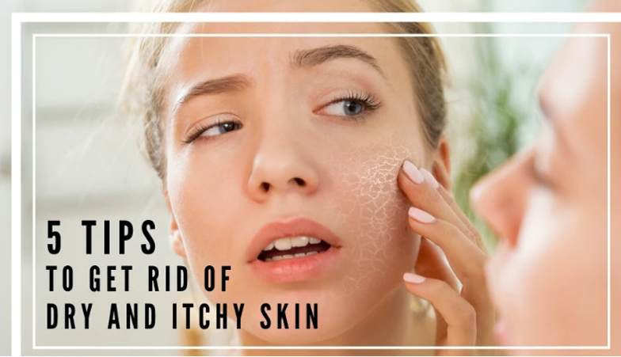
Skin tends to dry and itchy during the fall and winter as the humidity is low. Cold air pulls moisture away from skin. It tightens skin cells and weaken our protective skin barrier. Skin cannot lock in and restore moisture and oil effectively. We are going to provide 5 tips to get rid of dry and itchy skin.
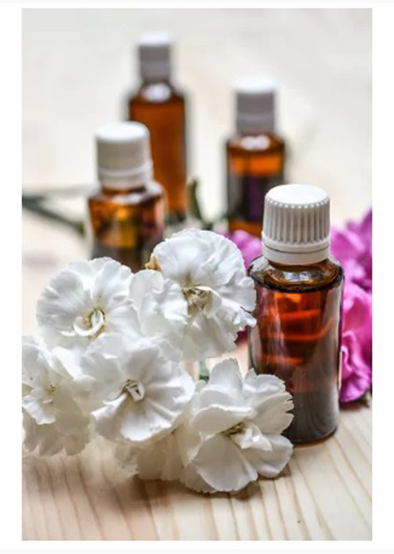
1. Moisturiser
You can apply facial and body moisturiser more regularly to keep the skin hydrated. Choose a moisturiser containing moisture-locking ingredients is the most important. Glycerin, Petrolatum, Vitamin B3 and B5 can soothe dry skin. Avoid choosing moisturisers containing alcohol, fragrance and chemical ingredients..
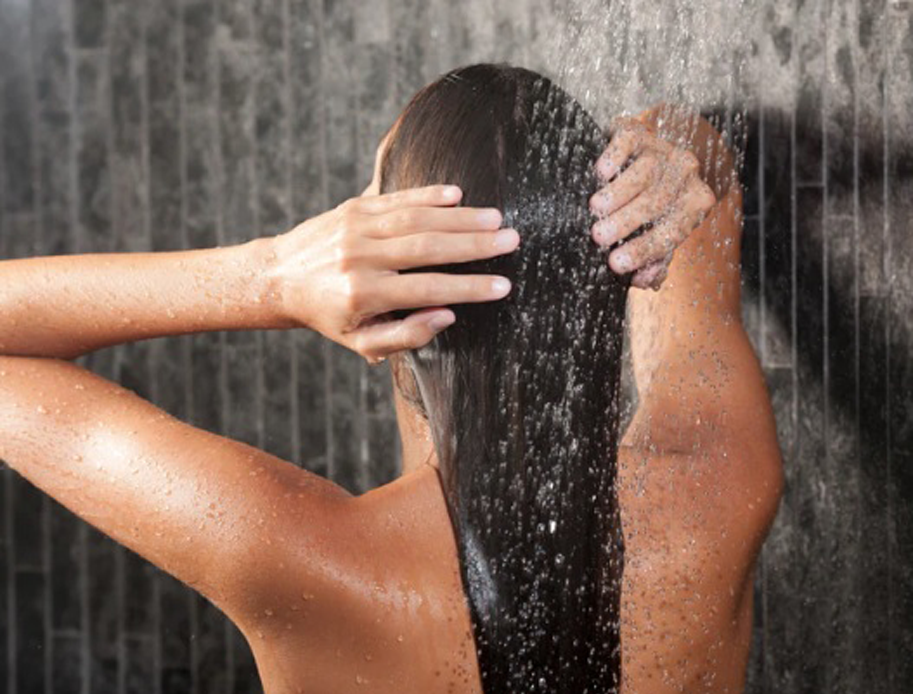
2. Facial and Body Oils
When the skin is too dry, it will produce less oil to lock in the moisture of skin. The particles of facial and body oils are like the skin structure. The skin can penetrate the nutrients of facial and body oils effectively. It is good for rescuing dry, rough and itchy skin.
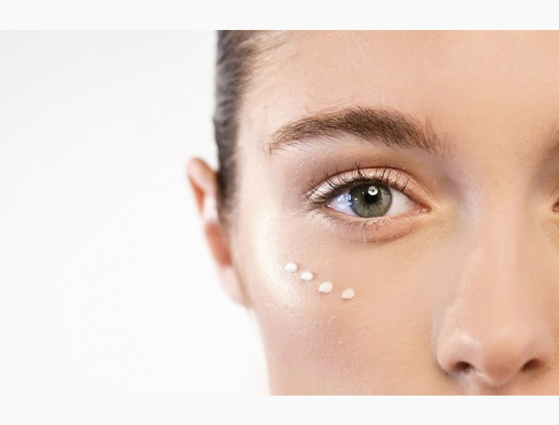
3. Daily Routine of Skin Cleansing
Facial Cleansing:
Clean your face twice a day only to avoid washing off natural oil of skin. Warm steam can help to open the pores for moisturising.
Shower/ Bath:
Take a shower or bath once daily. Avoid taking too long and too hot shower or bath. Do not use body wash that contains soap, Alpha Hydroxy Acids (AHA), fragrance and scrub. And, do not rub your skin by the bath sponge or towel.
TAKE A BREAK FROM SKINCARE
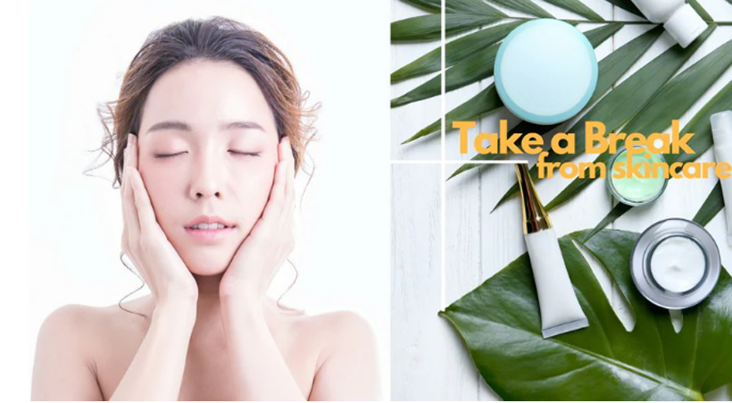
In recent years, skin fasting become a hot topic among girls. Instead of using too much skincare and cosmetics products, we should let our skin to restore and renew itself. However, the efficacy of this method is very controversial. Do you want to try? It is better to understand the principle and how to do it before deciding whether to start or not!
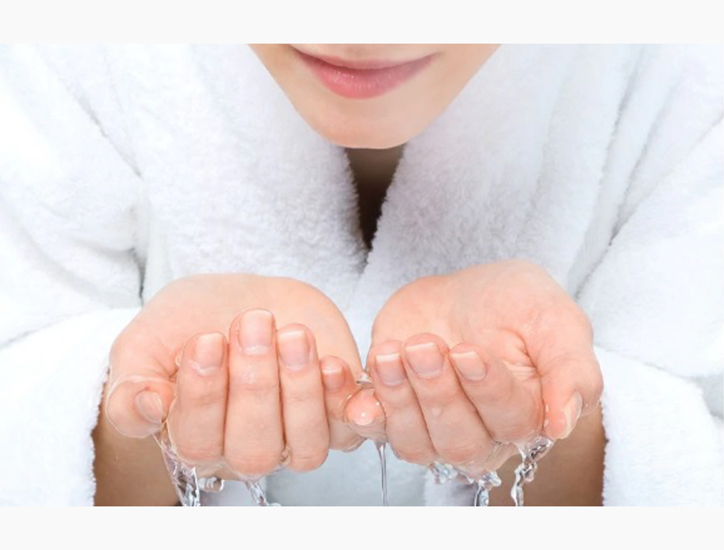
1. Wash only with water/pure soap
The theory of skin fasting suggests that frequent face washing can cause the skin to be too dry and damage the surface of the skin, destroying the surface self-protection, and it will cause fine lines and slack. It is recommended not to use facial cleansing products, just wash your face with clean water and pure soap without surfactant gently.
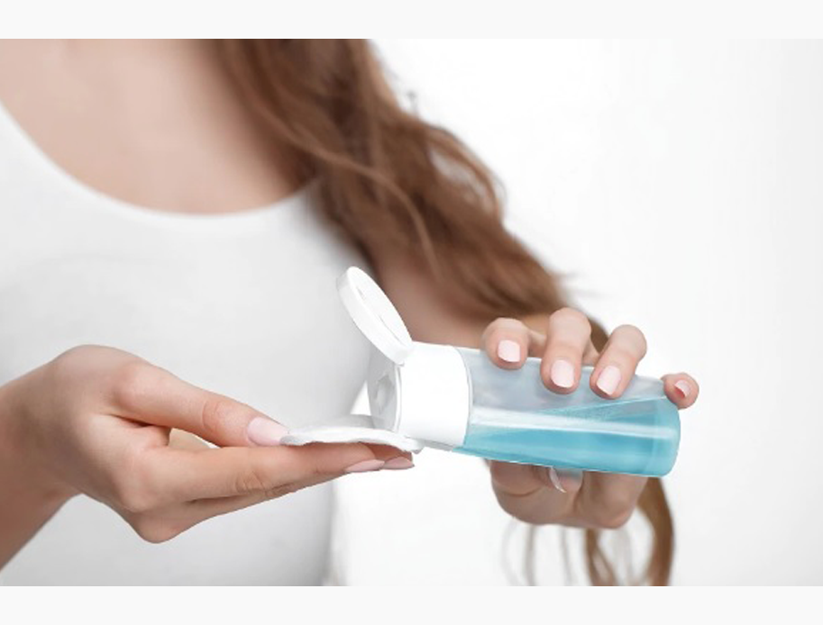
2. Do not apply toner
The skin fasting theory believes that the main component of toner is water, when the water evaporates on the skin, between the cells will crack and make the skin drier.
3. Apply only a small amount of Vaseline for moisturizing
Do not use functional chemicals such as whitening, anti-aging, wrinkle removal, etc., just pay attention on simple cleaning and moisturizing. If your skin feels dry, apply a small amount of Vaseline. Because Vaseline is not oxidized, other creams and vegetable oils are easily oxidized and have the potential to cause harmful substances after oxidation.
4. Reduce sunscreen
Because sunscreen products contain a lot of chemicals, doctors do not advocate the use of sunscreen products, he believes that the absorption of the right amount of ultraviolet light can make the skin health. If you are not exposed to the sun for a short period of time, you can use physical sun protection, like hat/face towel.
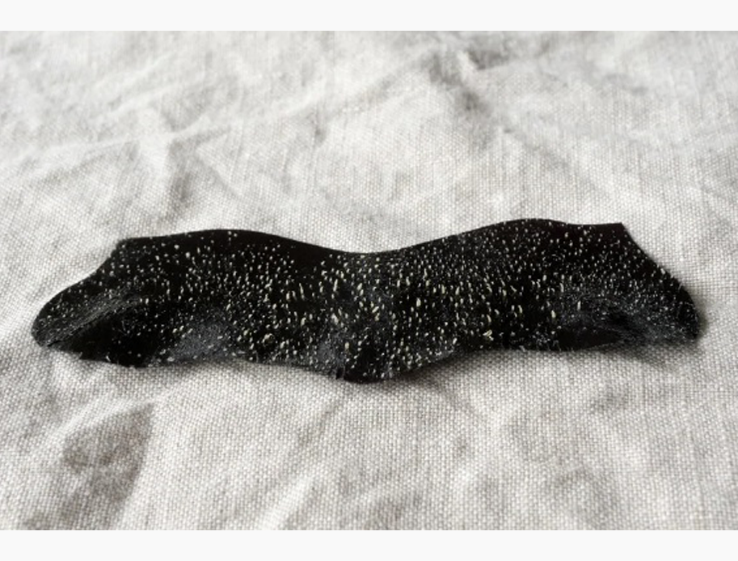
5. No blackhead stickers
The blackheads are old wastes formed by the exfoliation of keratinocytes. The clear blackhead paste can immediately remove the pimples, but it will cause internal damage to the pores. In order to recover the wound, the stratum corneum will be thicken, causing skin problem of large pores.
Are you suitable for skin fasting?
The effect of skin fasting varies from different people! Some people may have problems of molting, acne and long grease after trial. Therefore, before you start, it is recommended you should ask the dermatologist or check your skin adaptation level for three to seven days. If the result is too bad, it is recommended to try “intermediate skin fasting”, that is, only apply skin fasting 1-2 days a week to let your skin to have enough time to take a rest.